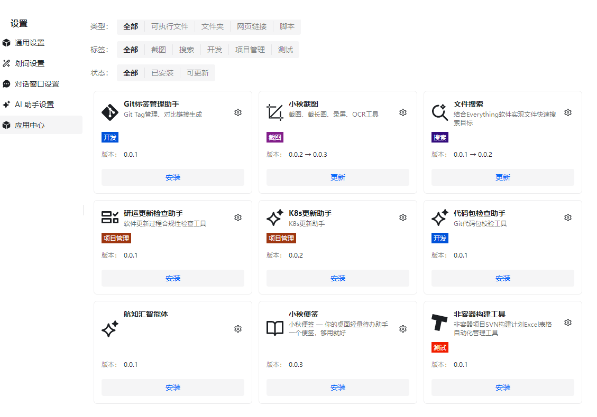
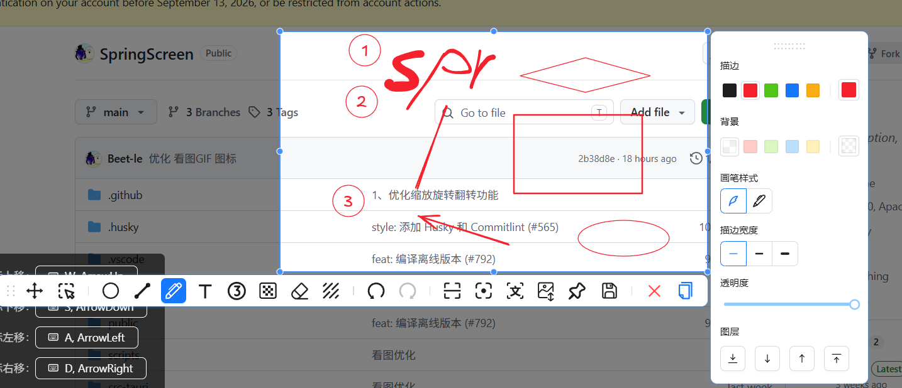
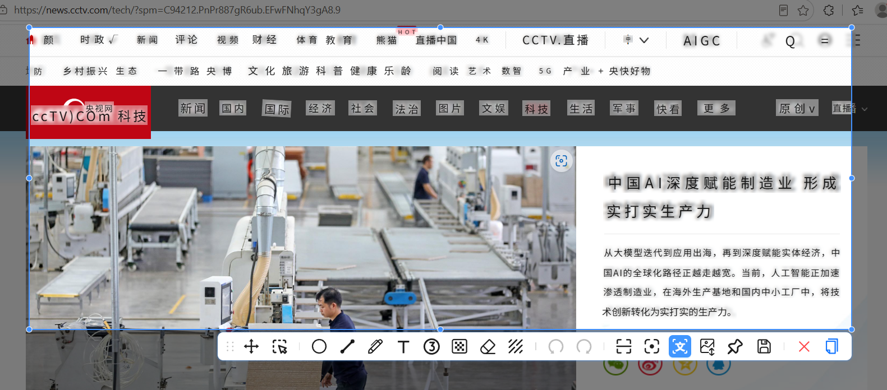
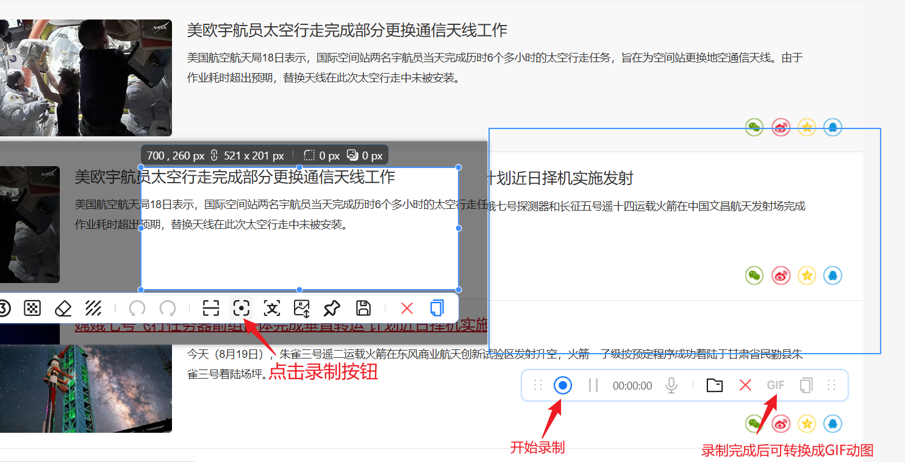

快速上手 SpringScreenShot
在 小秋桌面应用中心点击安装即可。安装完成后，任务栏会出现截图图标，同时默认开启全局快捷键
Alt + A 随时唤起截图功能。

以上启动方式均可前往设置中自由配置，打造属于你的高效截图体验。
SpringScreenShot 支持多种方式启动截图：
SpringScreenShot 提供多种截图模式，满足不同的使用需求：
在区域截图模式下，SpringScreenShot 能够自动识别屏幕上的窗口和元素边界：
完成截图区域选择后，会进入标注编辑模式。SpringScreenShot 提供了丰富的标注工具，帮助您快速为截图添加说明和标记。

编辑界面提供了以下标注工具：
通过文字识别按钮，一键提取截取内容中的文字，可点击复制按钮复制全部，也可以选择想要的文字 Ctrl+C 进行选择性的复制。

框选需要录制的屏幕区域，点击录制按钮即可开始高清录屏。录制完成后支持将视频一键转换为 GIF 动图，满足不同场景下的分享需求。

截图时点击固定到屏幕工具，将截图作为悬浮窗固定在屏幕上：
完成截图编辑后，SpringScreenShot 提供了多种保存和分享方式：
点击复制按钮或使用快捷键 Ctrl+C，将截图复制到系统剪贴板，可直接粘贴到：
点击保存按钮，将截图保存为图片文件：
无论您从事什么行业
快速捕捉错误信息、API文档和代码片段
截取设计参考、标注UI元素
记录用户流程、截取反馈线程
创建带标注的教程和演示
使用OCR提取引用和参考资料
逐步记录问题，录屏标注指导
来自真实用户的反馈
"能截长图、录GIF、还能OCR，这可能是最强的免费截图工具。而且在我的老电脑上运行得飞快！"
— 资深用户
"截图、贴图、标注、文字识别，都是办公时非常需要的功能。一个软件搞定所有需求，强烈推荐！"
— 办公软件评测
"梦想中的截图工具，终于有人做出来了！低配置电脑的福音，内存占用真的很低。"
— 技术博主
小秋截图是小秋桌面的内置功能组件
支持 Windows 和 macOS 系统 | 命令行启动: SpringScreen.exe --open-draw